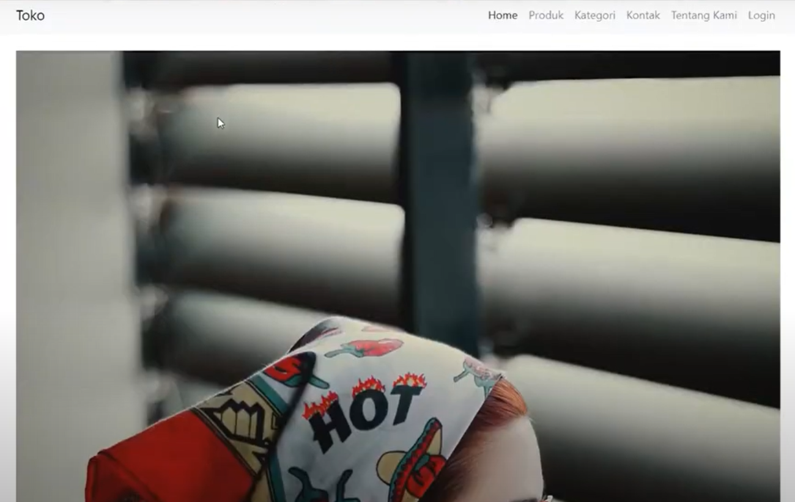

Web E-Commerce ini digunakan dalam penjualan baju, sepatu dan celana yang berorientasi dengan framework laravel
View ProjectPORTOFOLIO

Web E-Commerce Fashion Laravel
by Arif Fajar P. / 1 February, 2022

Chatbot UMKM
by Arif Fajar P. / 22 Desember, 2021
Chatbot merupakan Artificial Intelligence yang diharapkan dapat membantu masyarakat sekitar dalam memilih makanan
View Project